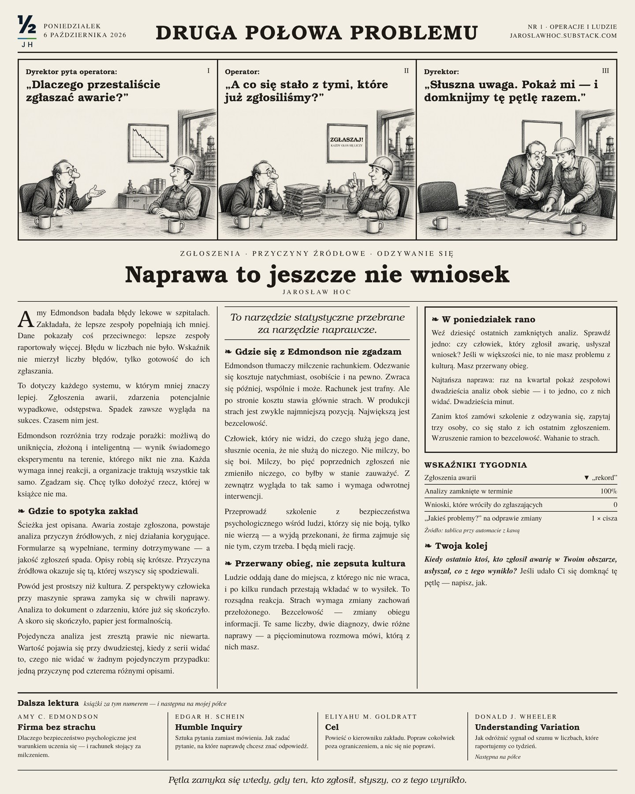

Techniczne rozwiązania zawodzą z powodów, które nie są techniczne.
Piszę o tej drugiej połowie: o systemie pomiaru, o tym, gdzie naprawdę stoi ograniczenie, i o tym, co opłaca się ludziom, którzy mają rozwiązanie uruchomić.
Jarosław Hoc · blisko 30 lat w produkcji ciągłej · Grupa Żywiec (HEINEKEN)

Nr 1 · 6.10.2026
Naprawa to jeszcze nie wniosek
Spadek liczby zgłoszeń awarii zawsze wygląda na sukces. Czasem nim jest. Częściej ludzie przestali wierzyć, że zgłoszenie do czegoś prowadzi. Lektura: Amy Edmondson, „Firma bez strachu”.
W poniedziałek rano
Czytaj na SubstackuWszystkie numery →- Weź dziesięć ostatnich zamkniętych analiz. Sprawdź jedno: czy zgłaszający usłyszał wniosek.
- Raz na kwartał pokaż zespołowi dwadzieścia analiz obok siebie. Dwadzieścia minut.
- Zanim zamówisz szkolenie z kultury błędu, zapytaj trzy osoby, co się stało z ich ostatnim zgłoszeniem.
Jeden tekst co dwa tygodnie. W poniedziałek rano.
Lektura, mechanizm z zakładu i jedna rzecz do zrobienia. Po polsku i po angielsku. Bez spamu, można się wypisać jednym kliknięciem.
Teksty
Pierwszy tekst ukazuje się w październiku 2026. Teksty publikuję na Substacku, tu będzie ich lista.